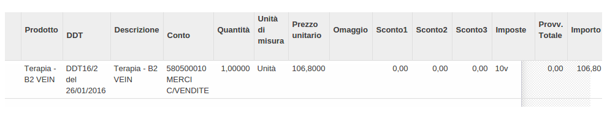

Funzioni principali del modulo
Questo modulo modifica la gestione della fatturazione riguardante i kit per i prodotti.
Nel modulo di base, nella fattura accompagnatoria, risulta il prodotto situato nel kit e il prezzo
del singolo prodotto; invece, con questo modulo, viene eseguito un ordine di vendita, selezionando
un kit, sulla relativa fattura risulterá:
Prodotto: nome del kit
Quantitá : quantitá del kit
Prezzo: prezzo del kit
 La stessa modifica é stata effettuata per le fatture differite dei Ddt.
La stessa modifica é stata effettuata per le fatture differite dei Ddt.
